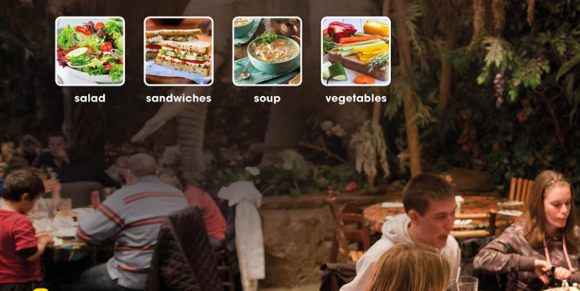
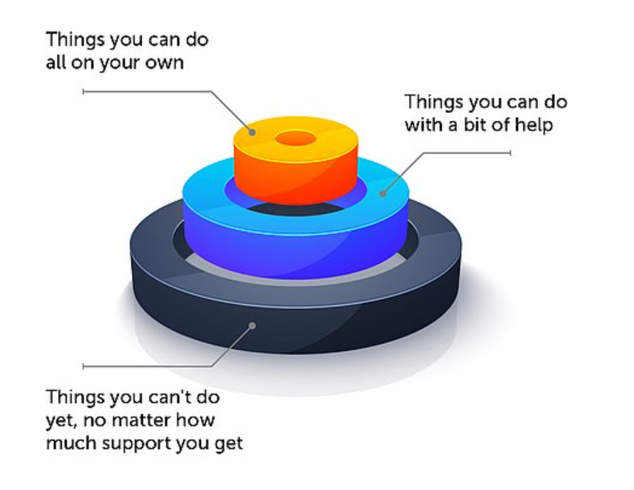

CENTER FOR FOREIGN LANGUAGES · CAN THO UNIVERSITY
SCAFFOLDING From Teacher Support to
Agenda
Workshop overview Learning outcomes Identify an achievable challenge
Choose planned and responsive support
Transfer responsibility to learners
Design a practical scaffolding activity
Macmillan Education · LOOK 3, Unit 5
01 Put a Finger Down02 Scaffolding & ZPD03 Hard & Soft Scaffolding04 Four stages & fading05 Scaffolding Design Challenge06 Zalo Gallery & Voting07 Knowledge Challenge
Coursebook
LOOK 3 · Cover ← Back to Activity Cover 49 50 51 52 53 54 55 56
Coursebook
LOOK 3 · Page 49 ← Back to Activity Cover 49 50 51 52 53 54 55 56
Coursebook
LOOK 3 · Page 50 ← Back to Activity Cover 49 50 51 52 53 54 55 56
Coursebook
LOOK 3 · Page 51 ← Back to Activity Cover 49 50 51 52 53 54 55 56
Coursebook
LOOK 3 · Page 52 ← Back to Activity Cover 49 50 51 52 53 54 55 56
Coursebook
LOOK 3 · Page 53 ← Back to Activity Cover 49 50 51 52 53 54 55 56
Coursebook
LOOK 3 · Page 54 ← Back to Activity Cover 49 50 51 52 53 54 55 56
Coursebook
LOOK 3 · Page 55 ← Back to Activity Cover 49 50 51 52 53 54 55 56
Coursebook
LOOK 3 · Page 56 ← Back to Activity Cover 49 50 51 52 53 54 55 56
Recognize
Put a Finger Down Hold up ten fingers. Put a finger down if…
01 / 10 Your students understand the instructions but don't know how to start.
Recognize
Put a Finger Down Hold up ten fingers. Put a finger down if…
02 / 10 Your students know the vocabulary but cannot express their ideas.
Recognize
Put a Finger Down Hold up ten fingers. Put a finger down if…
03 / 10 Your students can complete an exercise with your help but cannot do a similar exercise independently.
Recognize
Put a Finger Down Hold up ten fingers. Put a finger down if…
04 / 10 You have answered your own question because your students remained silent.
Recognize
Put a Finger Down Hold up ten fingers. Put a finger down if…
05 / 10 You have given students a complete model instead of helping them develop their own ideas.
Recognize
Put a Finger Down Hold up ten fingers. Put a finger down if…
06 / 10 You have provided the same support to every student.
Recognize
Put a Finger Down Hold up ten fingers. Put a finger down if…
07 / 10 You have made a task easier because your students were struggling.
Recognize
Put a Finger Down Hold up ten fingers. Put a finger down if…
08 / 10 A lesson went smoothly, but your students couldn't do the same task the following week.
Recognize
Put a Finger Down Hold up ten fingers. Put a finger down if…
09 / 10 The more you helped, the more your students depended on you.
Recognize
Put a Finger Down Hold up ten fingers. Put a finger down if…
10 / 10 Your students completed every exercise correctly but struggled to use what they had learned in real communication.
Recognize
Think about your teaching Are we helping students complete the task
Discover
2.1 Look at the task 
Click the image to enlarge
Ordering food and drinks Goal: Make a polite request and a highly polite request for food and a drink using suitable quantity phrases.
Server: Can I help you?
Customer: Can I have a bowl of pasta, please? And a glass of juice?
Server: Here you are.
Customer: Thank you.
Dialogue adapted from Activity 4, p. 53.
Three learners (simulated) A · Pasta. Juice.
B · Can I have a … pasta, please?
C · Can I have a bowl of pasta, please?
Should all three receive the same support? Why?
Source: National Geographic Learning, LOOK 3, Unit 5, p. 53.
View textbook p. 53
The three responses are simulated, not textbook data. Do not assume one correct sentence proves full independence. Discover
2.2 Discover the ZPD 
ZPD: the middle zone — achievable with help
Zone of Proximal Development
Choose an achievable challenge.
The learner knows familiar food words and can make a request with a frame.
ZPD is the gap between independent and assisted performance. The classification is specific to this hypothetical learner. Discover
2.3 Complete the definition Workshop paraphrase of Crichton (2021), pp. 2–3 of supplied PDF. Explore
3.1 Hard or Soft? Hard scaffolding Prepare support in advance.
Can I have a ___ of ___, please?
Soft scaffolding Respond to difficulties as they arise.
Which container would you use?
Hard and soft describe how support is prepared or delivered, not the difficulty of the task. Explore
3.2 Match the Toolkit Drag or tap to match the bubbles
1. Classroom routines — 2. Visual & language supports — 3. Activating prior knowledge — 4. Modelling & demonstration — 5. Thinking time — 6. Peer support — 7. Monitoring & feedback — 8. Formative assessment —
A. Partners rehearse and help each other.B. Ask what learners usually order.C. Observe a new attempt to decide whether support is still needed.D. Show the sequence of a restaurant conversation.E. Prompt a learner to revise an unsuitable phrase.F. Show how to make a polite request.G. Use a picture menu or sentence frame.H. Allow time to select food and formulate a request.
These strategies are adapted from Crichton (2021), pp. 4–5. Assessment informs support decisions. Explore
3.3 Choose, Place & Justify Choose three useful supports. Select appropriate timing and justify your choices.
One possible selection of three supports. Other defensible placements are valid. Before/During/After is a workshop design lens, not Macmillan’s four-stage model. Transfer
4.1 Put the stages in order Drag the cards into order. Move a card to insert it, not swap it.
⠿ 1 Students order from a new menu without additional support. ↑ ↓
⠿ 2 The teacher demonstrates a restaurant conversation. ↑ ↓
⠿ 3 Students practise in pairs; the teacher helps only when needed. ↑ ↓
⠿ 4 The teacher leads; students help complete the requests. ↑ ↓
B → D → C → A. Responsibility moves toward the learner. Transfer
4.2 Four stages 1 Modelling I do, you watch.
Teacher demonstrates; learners observe.
2 Guided Practice I do, you help.
Teacher leads; learners contribute.
3 Gradual Release You do, I help.
Learners perform; teacher assists.
4 Independent Practice You do, I watch.
Learners perform; teacher observes.
Blue: teacher responsibility · Green: learner responsibility. Conceptual illustration, not measured data.
Transfer
4.3 What Would You Do Next? Use evidence of learner readiness. If performance deteriorates, restore or change support. Allow time, positive feedback and a second attempt. Design
Group assignment Choose one activity for your assigned skill. Any textbook is welcome.
Listening 50 · 56
Assigned groups Speaking 50 · 51 · 53
Assigned groups LOOK 3 page numbers are optional resource suggestions.
Open Design Canvas → View Mind Map
Design
Design Canvas · Group profile Group Name
Language Skill
Learner Level
Design Canvas · Step 1 / 6 · Saved in this browser Example First step Next step → Generate Mind Map
Design
Design Canvas · Task & barriers Original task and learning goal
Specific learning barriers
Design Canvas · Step 2 / 6 · Saved in this browser Example First step Next step → Generate Mind Map
Design
Design Canvas · Plan the support Hard scaffolding: what will you prepare?
Soft scaffolding: how will you respond?
When will each support be used?
Design Canvas · Step 3 / 6 · Saved in this browser Example First step Next step → Generate Mind Map
Design
Design Canvas · Transfer responsibility Modelling – I do, you watch
Guided Practice – I do, you help
Gradual Release – You do, I help
Independent Practice – You do, I watch
Design Canvas · Step 4 / 6 · Saved in this browser Example First step Next step → Generate Mind Map
Design
Design Canvas · Adapt & check independence Some learners can now complete the task with your support; others still struggle. What will you change?
Adjust support for learners who are still struggling
Reduce support for learners who are ready
Evidence of independent performance
Design Canvas · Step 5 / 6 · Saved in this browser Example First step Next step → Generate Mind Map
Design
Design Canvas · Create actual support material Produce one usable teaching resource: prompts, frames, a visual organizer or a worked example.
Actual support material: write prompts, frames or describe your attached visual
Generate Mind Map Clear canvas
Design Canvas · Step 6 / 6 · Saved in this browser Example First step Next step → Generate Mind Map
Design
Your Scaffolding Mind Map Complete your canvas and generate a mind map.
Generate / Update Mind Map Download PNG View full size Edit Canvas
Share
Share & Vote on Zalo Share your design 01 Generate Mind Map02 Download PNG03 Post to the workshop Zalo group04 Explore and vote
Open Zalo group ↗ Use the Zalo group shared by the trainer.
Vote for effective scaffolding Appropriate · Practical · Adaptive · Empowering
♥ 1 Heart = 1 Point
One post per group. Vote for other groups only. The trainer counts heart reactions and announces the winner.
Blooket
Blooket Knowledge Challenge ? GAME CODE •••••• PLAY Ready to play? Get your phone · Enter the game code · Join the challenge
Join Blooket ↗
Blooket
Knowledge Challenge · 01 / 25 Answer: Learner independence. Apply this principle to classroom practice. Blooket
Knowledge Challenge · 02 / 25 Answer: A task achievable with help. Apply this principle to classroom practice. Blooket
Knowledge Challenge · 03 / 25 Answer: Hard scaffolding. Apply this principle to classroom practice. Blooket
Knowledge Challenge · 04 / 25 Answer: Soft scaffolding. Apply this principle to classroom practice. Blooket
Knowledge Challenge · 05 / 25 Answer: Modelling. Apply this principle to classroom practice. Blooket
Knowledge Challenge · 06 / 25 Answer: Gradual Release. Apply this principle to classroom practice. Blooket
Knowledge Challenge · 07 / 25 Answer: When learners are ready. Apply this principle to classroom practice. Blooket
Knowledge Challenge · 08 / 25 Answer: Identify the difficulty and adjust support. Apply this principle to classroom practice. Blooket
Knowledge Challenge · 09 / 25 Answer: Formative assessment. Apply this principle to classroom practice. Blooket
Knowledge Challenge · 10 / 25 Answer: Completing a comparable new task without extra help. Apply this principle to classroom practice. Blooket
Knowledge Challenge · 11 / 25 Support is adjusted as competence develops. Blooket
Knowledge Challenge · 12 / 25 Support should respond to individual needs. Blooket
Knowledge Challenge · 13 / 25 The task may be beyond the learner’s current ZPD. Blooket
Knowledge Challenge · 14 / 25 Compare what is possible alone and with assistance. Blooket
Knowledge Challenge · 15 / 25 Hard support is planned in advance. Blooket
Knowledge Challenge · 16 / 25 Soft support responds to an observed need. Blooket
Knowledge Challenge · 17 / 25 Predictable routines reduce uncertainty about procedures. Blooket
Knowledge Challenge · 18 / 25 Prior knowledge provides a starting point for new learning. Blooket
Knowledge Challenge · 19 / 25 The menu helps learners make their own request. Blooket
Knowledge Challenge · 20 / 25 A pause can allow the learner to retrieve and organize language. Blooket
Knowledge Challenge · 21 / 25 Peer help should preserve each learner’s participation. Blooket
Knowledge Challenge · 22 / 25 Guided practice involves teacher-led joint performance. Blooket
Knowledge Challenge · 23 / 25 The teacher observes independent performance. Blooket
Knowledge Challenge · 24 / 25 Fading is responsive, not an irreversible sequence. Blooket
Knowledge Challenge · 25 / 25 Targeted prompts help learners notice and revise their own errors. Reference
References Reference materials Lucy Crichton (2021), Scaffolding learning in the Primary classroom , Macmillan Education.
National Geographic Learning, LOOK 3, Unit 5: Eating Out, pp. 49–56.
Workshop examples and the design canvas are adaptations, not official publisher materials. Textbook excerpts are supplied by the workshop organizer; confirm permission before public hosting.
Homework · Group challenge
From Workshop to Classroom Design · Teach · Reflect Choose any activity from a coursebook you teach Identify the learning goal and specific learning barriers Complete your group Design Canvas Generate and download your Scaffolding Mind Map as a PNG image Conduct a 10–15-minute teaching demo using your scaffolding strategies and record it with Zoom or another recording tool Upload both the Mind Map and teaching demo video to the designated Google Drive folder File naming:
Open Homework Canvas Submit Homework – Google Drive
Homework
Homework Canvas · Group profile Group Name
Group Members
Language Skill
Learner Level
Lesson Title
Coursebook / Unit / Page
Homework · Step 1 / 6 · Group homework saved separately in this browser First step Next step → Generate Mind Map
Homework
Homework Canvas · Task & barriers Original task and learning goal
Specific learning barriers
Homework · Step 2 / 6 · Group homework saved separately in this browser First step Next step → Generate Mind Map
Homework
Homework Canvas · Plan the support Hard scaffolding: what will you prepare?
Soft scaffolding: how will you respond?
When will each support be used?
Homework · Step 3 / 6 · Group homework saved separately in this browser First step Next step → Generate Mind Map
Homework
Homework Canvas · Transfer responsibility Modelling – I do, you watch
Guided Practice – I do, you help
Gradual Release – You do, I help
Independent Practice – You do, I watch
Homework · Step 4 / 6 · Group homework saved separately in this browser First step Next step → Generate Mind Map
Homework
Homework Canvas · Adapt & check independence Some learners can now complete the task with your support; others still struggle. What will you change?
Adjust support for learners who are still struggling
Reduce support for learners who are ready
Evidence of independent performance
Homework · Step 5 / 6 · Group homework saved separately in this browser First step Next step → Generate Mind Map
Homework
Homework Canvas · Create actual support material Produce one usable teaching resource: prompts, frames, a visual organizer or a worked example.
Actual support material: write prompts, frames or describe your attached visual
Homework · Step 6 / 6 · Group homework saved separately in this browser First step Next step → Generate Mind Map
Homework
Your Group Scaffolding Mind Map Complete your group canvas and generate a mind map
Generate / Update Mind Map Download PNG View full size Edit Canvas Reset Homework Submit Homework – Google Drive
Group Name _ Scaffolding Mind Map _ Lesson Title.png